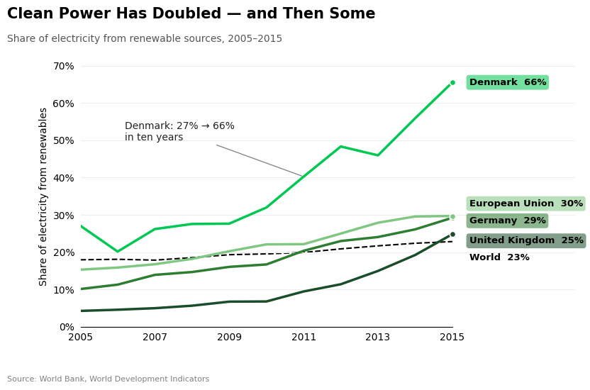
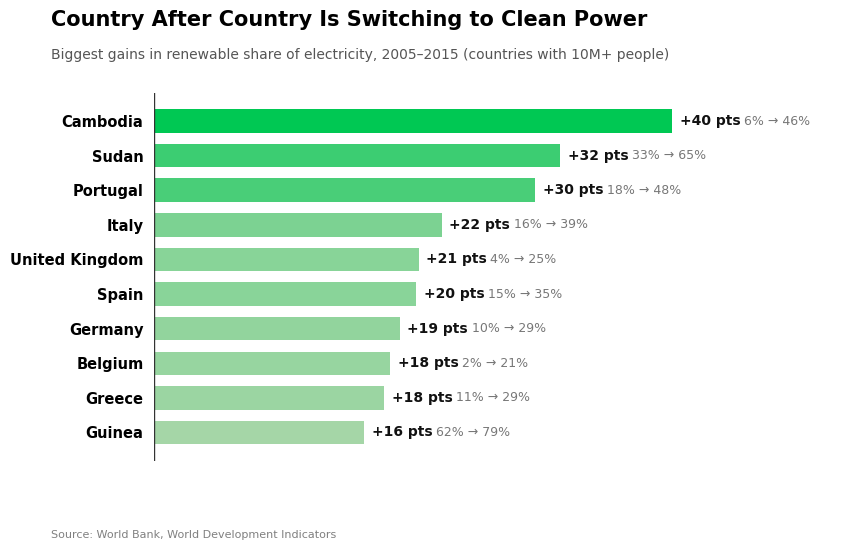
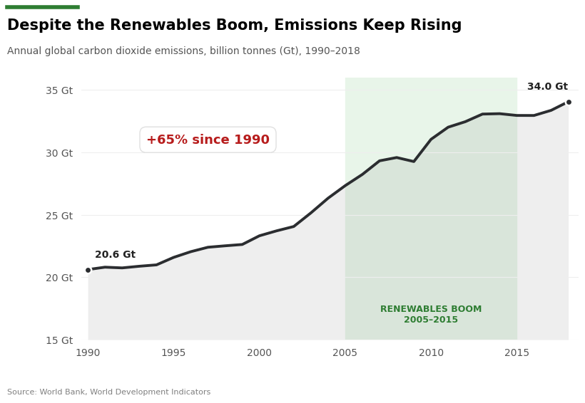
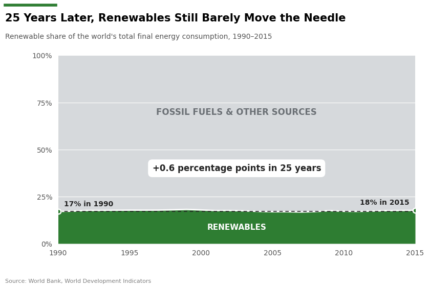

Data: World Bank, World Development Indicators — Climate Change (cleaned dataset).


Scores run from −2 (fully deceptive) to +2 (fully earnest).
I chose a 10-year window starting in 2005 because it’s a clean, recent decade, but it also conveniently skips the earlier decline in renewable electricity. I tried a 1990 start, and the gains looked much smaller. A reader would need the full timeline to know what was left out.
Showing only top performers implies they’re typical. Including the world line keeps the chart partly honest, since a careful reader can see the world only moved from 18% to 23%. The bright green palette signals “clean” and “good,” which makes the progress feel emotionally positive.
Renewable electricity is a common, accepted metric, so the choice feels reasonable. But I picked it because the total-energy share was nearly flat (17% to 18% over 25 years). A reader can’t tell from the chart that a less flattering measure was available.
The 10M cutoff is mostly an earnest choice: it removes tiny countries whose large percentage swings come from very small power systems. I disclose it in the subtitle. It’s slightly persuasive because the remaining list looks like a broad global movement.
I paired an energetic title with a specific, memorable number. Both are factually accurate for the countries shown, but together they let readers generalize from the best performer. The title is the most “slanted” text on the page.


Scores run from −2 (fully deceptive) to +2 (fully earnest).
Truncated axes are common for line charts, since lines show change rather than magnitude, so this is a gray area. Still, I chose 15 specifically to exaggerate the slope, not for readability.
Total energy is arguably the more complete measure, since climate impact depends on all energy use, not just power generation. But I chose it because it erases the electricity gains, not because it’s more complete.
A part-to-whole view is standard for shares, so the scale is earnest. The persuasion comes from the visual weight of the gray block and from lumping nuclear into “other sources.”
The band ties the two sides together and makes the contrast vivid. The years and data are accurate, but the label invites a causal conclusion the data doesn’t support.
Callouts help readers find the key number quickly, which is earnest. The persuasion is in which number I chose to highlight and the emotional color (red) I gave it.
The two sides show different views of renewable energy progress. The FOR side focuses on how much renewable electricity has grown, especially in countries that have made the most progress. The AGAINST side looks at the bigger picture by showing that CO₂ emissions are still increasing and renewables still make up a relatively small percentage of total energy use.
I’m leaning toward the FOR side because I think the increase in renewable electricity is important. However, I also recognize that I selected countries and measurements that make progress look more impressive. The AGAINST side does the opposite by focusing on areas where progress is less noticeable.
Building the FOR side was easier than I expected, because good news is easy to frame with bright colors and strong titles. The AGAINST side was harder, because making something look small or slow without visibly breaking the chart took subtler tools, like the 100% scale and the shaded “boom” band. What surprised me most was that many of my “deceptive” choices are also standard practice, such as truncated axes or choosing a common metric. That makes me think there isn’t a clean boundary. I would define ethical visualization as matching the design to an honest claim: if the title says “the world,” the chart should show the world. Persuasion is acceptable when it emphasizes something true and representative; it becomes misleading when it relies on the reader not knowing what was excluded.